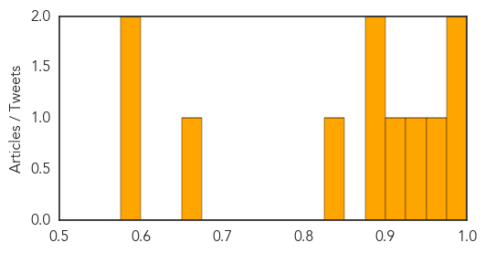
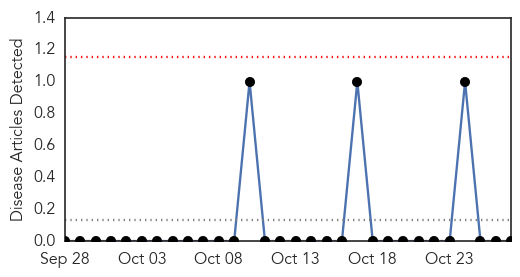

Dengue Fever
30-Day Web Trend
1 alerts, 0 warnings

30-Day Twitter Trend
0 alerts, 0 warnings

Article Locations

Article Confidences
Top Articles:
- 0.986
- Dengue fever meeting held
- 0.985
- Flawed fogging raises sting concern
- 0.971
- Second dengue death in capital
- 0.938
- Interdepartmental Coordinating Committee on Mosquito-borne Diseases updated on local case of dengue fever
- 0.917
- No info on 75-year-old's dengue death: PMC
- 0.891
- KEM doctor is dengue’s seventh victim this year
- 0.881
- KGMU infested with disease causing mosquitoes
- 0.839
- 28 dengue patients hospitalised in Rawalpindi
- 0.672
- KEM docs say their hospital is dengue breeding ground
- 0.597
- 70 teams on joint campaign to control malaria-dengue in Bhopal
- 0.594
- Anti-dengue drive
Top Tweets:
-
No tweets found for Oct 27, 2014
Mumps
30-Day Web Trend
0 alerts, 0 warnings

30-Day Twitter Trend
0 alerts, 0 warnings

Article Locations

Article Confidences

Top Articles:
-
No articles found for Oct 27, 2014
Top Tweets:
-
No tweets found for Oct 27, 2014